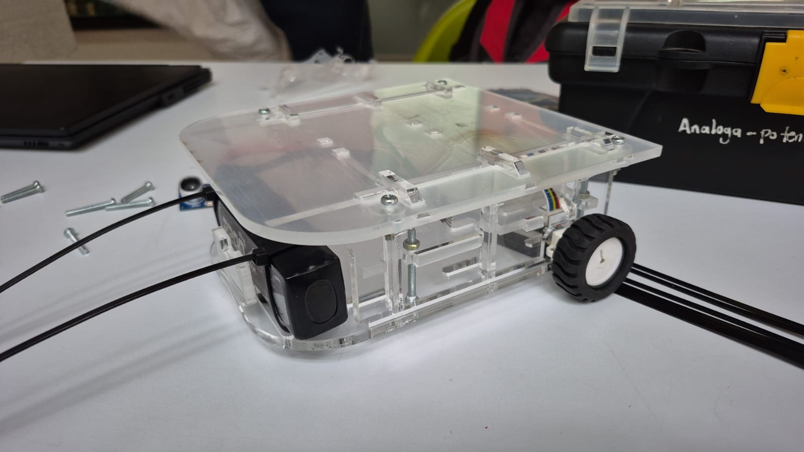
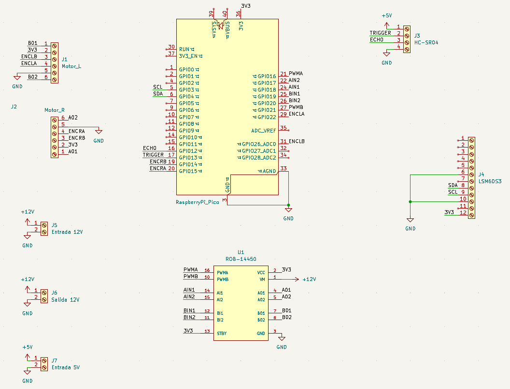
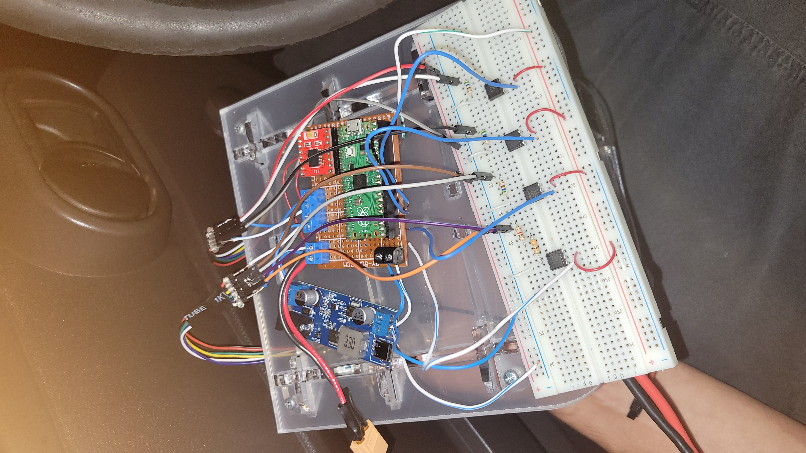
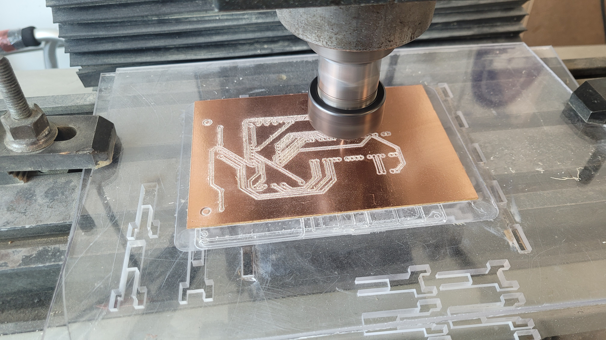
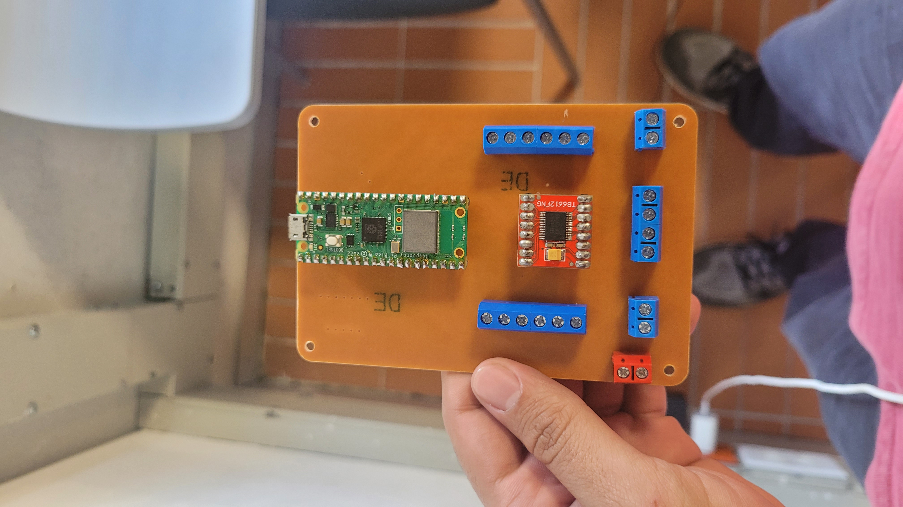

Differentialantrieb-Roboter
Übersicht
In diesem Kursprojekt waren wir in einem Team von vier Menschen und wir sollten einen ganzen Differentialantrieb-Roboter vom Anfang herstellen. Wir sollten alle Entwurfe machen, sowohl vom Chassis und Hardware, als auch vom Software. Ich persönlich war für alle Schaltungen und den Elektronischen Teil des Roboters verantwortlich. Dabei, habe ich die ganze Steuerplatine entworfen, eigenständig in der Universität zugeschnitten und mit allen Komponeneten zusammengebaut. Ich habe auch die notwendige Teste gemacht und verschiedene Fehler korrigiert. Am Ende, nach nur eine Version, hatten wir eine völlig funktionale Platine für den Roboter.
Fotos






Videos
Technische Details
- Robustheit
- Pfadplanung und Sensorik
- Entwurf von der Steuerplatine
Der Roboter sollte schwer Sachen tragen können, und Platz dafür haben. Da war unserer Hauptherausforderung, weil wir mussten alle komponente sicher stellen, aber auch ein großer Platz für den Last lassen. Dafür haben wir eine Struktur mit drei verschiedenen Räumen entworfen, wobei die empfindlichste Komponenten waren besser geschützt und der Last war besser unterstützt.
Der Roboter musste unter zwei unterschiedlichen Moden arbeiten: Fernsteuerung und Pfadplanung. Das erste war relativ leicht, weil man sollte einfach das Steuergerät mit dem Roboter verbinden, aber das zweite Modus fiel uns schwierriger. Man sollte die vollständige Route planen und programieren und Sensoren benutzen, damit der Roboter wusste, wo genau in dem Raum er war. Dafür haben wir den kompletten Weg mit hilfe von einer digitalen Zwilling in Gazebo programiert und haben mehrere Sensoren benutzt, wie die Encoders von den Motoren, ein Ultraschallsensor und ein IMU.
Die Steuerplatine sollte eine kompakte Bauweise haben, damit der Roboter sie tragen könnte, und die Schnittstellen mussten einfach zu erreichen sein, weil der Raum zu eng war, um Kabel zu verbinden. Das wurde alles berücksichtigt und die Platine wurde so entworfen, dass alle stecker am benötigten Rand standen.
Ergebnisse & Learnings
Der Roboter hat am Ende korrekt funktioniert, auch wenn es uns schwierrig fiel, besonders mit der Pfadplanung. In diesem Projekt habe ich viel durch Ausprobieren gelernt, weil viele Dinge funktionieren nich vom ersten Mal an, oder sind nicht vorhersehbar. Ich habe auch gelernt vorauszusehen, dass für alle Fälle die Bedingungen nicht die gleiche werden sein, so man muss Wege finden, alle mögliche Szenarien abzudecken.